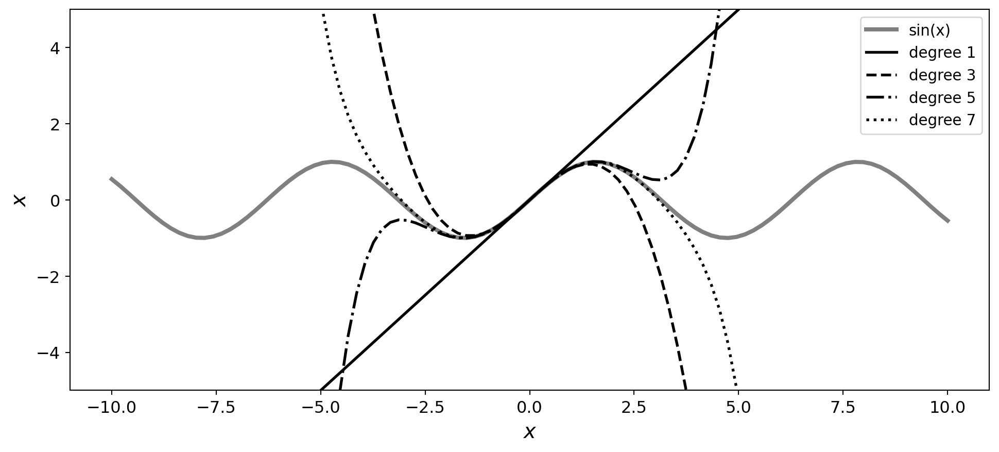

Definition 1 A sequence is a list of numbers written in a definite order: \[
a_1, a_2, a_3, \dots, a_n, a_{n+1} \dots
\]
the number \(a_1\), \(a_2\), and \(a_n\) are called the first term, the second term, the nth term. Since for every positive inter \(n\) there is a corresponding number \(a_n\), a sequence can be defined as a funtion with domain of the set of positive integers. The notation of the sequence function is \(a_n\) instead of \(f(n)\) in convention: \[
\text{The sequence } \{a_1,a_2,a_3,\dots\} \text{ is also denoted by } \{a_n\} \text{ or } \{a_n\}_{n=1}^{\infty}
\] .
Definition 2 A series or infinite series is defined as a sum of the terms of an infinite sequence \(\{a_n\}_{n=1}^{\infty}\): \[
a_1+ a_2+ a_3+ \dots+ a_n+ a_{n+1} \dots
\]
The notation of a series is: \(\sum_{n=1}^{\infty} a_n\) or \(\sum a_n\).
Definition 3 A power series is a series of the following form: \[
\sum_{n=0}^{\infty} c_nx^n = c_0x^0+c_1x^1+c_2x^2+ \dots+ c_nx^n+c_{n+1}x^{n+1}+\dots
\]
where \(x\) is a variable and the \(c_n\)’s are constants called the coefficients of the series.
Definition 4 A power series centered at a is a series of the following form: \[
\begin{aligned}
\sum_{n=0}^{\infty} c_n(x-a)^n &= c_0(x-a)^0+c_1(x-a)^1+c_2(x-a)^2+ \dots+ c_n(x-a)^n+c_{n+1}(x-a)^{n+1}+\dots \\
&= c_0+c_1(x-a)^1+c_2(x-a)^2+ \dots+ c_n(x-a)^n+c_{n+1}(x-a)^{n+1}+\dots
\end{aligned}
\]
where \(x\) is a variable and the \(c_n\)’s are constants called the coefficients of the series.
Theorem 1\(f\) is said to be a expanded power series centered at a : \[
\text{if }f(x)=\sum_{n=0}^{\infty} c_n(x-a)^n |x-a|<R, \text{ then, its coefficients are given by the formula } c_n=\frac{f^{(n)}(a)}{n!}
\]
where \(x\) is a variable and the \(c_n\)’s are constants called the coefficients of the series.
Proof)
Let \(f\) is any function that can be represented by a powerseries.
Definition 5\(f\) is said to be a Taylor’s series if f has a expanded power series at a with the following form: \[
\begin{aligned}
f(x)&=\sum_{n=0}^{\infty} \frac{f^{(n)}(a)}{n!}(x-a)^n \\
&= \frac{f^{(0)}(a)}{0!}(x-a)^0+\frac{f^{(1)}(a)}{1!}(x-a)^1+\frac{f^{(2)}(a)}{2!}(x-a)^2+\frac{f^{(0)}(a)}{0!}(x-a)^3 + \dots \\
&= f(a)+\frac{f^{(1)}(a)}{1!}(x-a)^1+\frac{f^{(2)}(a)}{2!}(x-a)^2+\frac{f^{(3)}(a)}{3!}(x-a)^3 + \dots
\end{aligned}
\]
Definition 6\(f\) is said to be a Maclaurin series if f has a Taylor’s series with the special case \(a=0\): \[
\begin{aligned}
f(x)&=\sum_{n=0}^{\infty} \frac{f^{(n)}(0)}{n!}(x)^n \\
&= \frac{f^{(0)}(0)}{0!}x^0+\frac{f^{(1)}(0)}{1!}x^1+\frac{f^{(2)}(0)}{2!}x^2+\frac{f^{(3)}(0)}{3!}x^3 + \dots \\
&= f(0)+\frac{f^{(1)}(0)}{1!}x^1+\frac{f^{(2)}(0)}{2!}x^2+\frac{f^{(3)}(0)}{3!}x^3 + \dots
\end{aligned}
\]
Code
import mathimport numpy as npimport matplotlib.pyplot as pltdegrees = (1, 3, 5, 7)ls = ('-', '--', '-.', ':')def taylor_e(x, a, n) :""" x* = a 에서 전개 f(x) = f(a) + f'(a)*(x-a) + (1/2!)f''(a)(x-a)^2 + ... + (1/k!)f^(k)(a)(x-a)^k + R_k """ signs = (1, -1, -1, 1) derivs = (np.cos, np.sin, np.cos, np.sin) fx = np.sin(a) for i inrange(1, n+1) : fx += (signs[(i%4)-1]*derivs[(i%4)-1](a)) / math.factorial(i)*(x-a)**ireturn fxx = np.linspace(-10, 10, 100)y = np.sin(x)fig = plt.figure(figsize=(12,5))ax = fig.add_subplot(1, 1, 1)ax.xaxis.set_tick_params(labelsize=12)ax.yaxis.set_tick_params(labelsize=12)ax.set_xlabel(r'$x$', fontsize=15)ax.set_ylabel(r'$x$', fontsize=15)ax.grid(False)taylors = (taylor_e(x, 0, i) for i in degrees)ax.plot(x, y , lw=3, color='gray', label=r"sin(x)")for i, taylor inenumerate(taylors) : ax.plot(x, taylor, lw=2, ls=ls[i], color='k', label="degree {}".format(degrees[i]))ax.legend(fontsize=11)ax.set_ylim([-5, 5])# plt.suptitle("Taylor series, order=1,2,3", fontsize=15)plt.show()

Theorem 2 If \(f(x)\) is differentiable (and therefore continuous) \(n\) times on \([a,b]\) , then there exists \(c\) such that \[
\begin{aligned}
f(b)&=f(a)+f'(a)(b-a)+\frac{f^{(2)}(a)^2}{2!}(b-a)^2+\dots+\\
&\frac{f^{(n-1)}(a)}{(n-1)!}(b-a)^{n-1} + \frac{f^{(n)}(c)}{n!}(b-a)^{n}, a<c<b
\end{aligned}
\] .
Proof) find \(k\) such that \(f(b)-(f(a)+f'(a)(b-a)+\frac{f^{(2)}(a)^2}{2!}(b-a)^2+\dots+\frac{f^{(n-1)}(a)}{(n-1)!}(b-a)^{n-1} + k(b-a)^{n})=0\).
Then, \(F(x)\) is differentiable on \([a,b]\). In addition, since \(F(a)=F(b)=0\), there exists \(c\) such that \(F'(c)=0\), \(a<c<b\) by the Mean Value Theorem. Thus,
Theorem 3 If \(f\) is differentiable (and therefore continuous) \(n\) times on \([a,b]\) , \(x^*,x \in [a,b]\), and \(x\ne x^*\), there exists \(\theta\) such that \(0<\theta<1\) and \[
\begin{aligned}
f(x)&=f(x^*)+f'(x^*)(x-x^*)+\frac{f^{(2)}(x^*)^2}{2!}(x-x^*)^2+\dots+\\
&\frac{f^{(n-1)}(x^*)}{(n-1)!}(x-x^*)^{n-1} + \frac{f^{(n)}(x^*+\theta(x-x^*))}{n!}(x-x^*)^{n}
\end{aligned}
\] .
In the above expression (Theorem 3), \(f(x)\) can be expressed with finite terms because it is differentiable \(n\) times. The symbol \(\theta\) represents a value between 0 and 1, and it is used in the context of Taylor’s theorem with remainder (see Definition 5). The general form of Taylor’s theorem with remainder is:
In the given expression, \(x^*+\theta(x-x^*)\) is the value of \(c\) that lies between \(x\) and \(x^*\), where \(\theta\) is a scalar value between \(0\) and \(1\). In other words, \(c\) is an internally dividing point, \(i\) that divides the segment \(\overline{xx^*}\) in the ratio \(\overline{x^*i}:\overline{ix}=\theta:(1-\theta)\) because \(x^*+\theta(x-x^*)=x^*(1-\theta)+\theta x\) .Therefore, \(x^*+\theta(x-x^*)\) of the remainder term in the expression is somewhere between \(x and x^*\):
def f(x):return x**3-3*x**2+4def df(x):return3*x**2-6*xdef d2f(x):return6*x-6def d3f(n):return np.repeat(6,n)# Define the Taylor series expansion up to the 3rd orderdef taylor(x):return f(0) + df(0)*x + d2f(0)*(x**2)/2+ d3f(len(x))*(x**3)/6# Create a range of x valuesx = np.linspace(-np.pi, np.pi, 100)# Calculate the function and its approximation using the Taylor series expansiony = f(x)y2 = df(x)y3 = d2f(x)y_approx = taylor(x)# Plot the function and its approximationplt.plot(x, y, '--',lw=5, label=r'$f(x)=x^3-3x^2+4$')plt.plot(x, df(x), label=r'$f(x)=3x^2-6x$')plt.plot(x, d2f(x), label=r'$f(x)=6x-6$')plt.plot(x, d3f(len(x)), label=r'$f(x)=6$')plt.plot(x, y_approx, label='Taylor Approximation')plt.legend()plt.show()
If \(f(x)=x^3-3x^2+4\), then \(\frac{df(x)}{dx}=3x^2-6x\), \(\frac{d^2f(x)}{dx^2}=6x-6\), \(\frac{d^3f(x)}{dx^3}=6\), \(\frac{d^nf(x)}{dx^n}=0, n\ge 4\).
If f is differentated 3 times, f is expressed with \(\theta\). But, if differentiated more than 4 times, the \(\theta\) disappears.
1.2 Second Derivative Test
The second derivative test is a method used to determine whether a critical point of a function is a local maximum, local minimum, or a saddle point. The test uses the sign of the second derivative of the function at the critical point to determine its nature. In other words, the second derivative test uses the sign of the second derivative to determine the concavity of the function at a critical point, which in turn determines whether the critical point is a local maximum, local minimum, or a saddle point.
Definition 7 Let \(f\) be a function with a critical point at \(x^*\). If \(f\) is twice differentiable at \(x^*\), then:
If \(f''(x^*) > 0\), then \(f\) has a local minimum at \(x^*\).
If \(f''(x^*) < 0\), then \(f\) has a local maximum at \(x^*\).
If \(f''(x^*) = 0\) and there exist values of \(x\) close to \(x^*\) such that \(f''(x) < 0\) and \(f''(x) > 0\), then \(f\) has a saddle point at \(x^*\).
If \(f''(x^*) = 0\) and there do not exist values of \(x\) close to \(x^*\) such that \(f''(x) < 0\) and \(f''(x) > 0\), then the test is inconclusive and we may need to use other methods to determine the nature of the critical point.
The second derivative test is a method used to determine the nature of a critical point of a function by examining the concavity of the function at that point.
If the second derivative of the function is positive at a critical point, then the function is concave up at that point, and the critical point is a local minimum. If the second derivative is negative, then the function is concave down, and the critical point is a local maximum. If the second derivative is zero, the test is inconclusive, and the other methods should be tried to determine the nature of the critical point. If there exist values of \(x\) close to \(x^*\) such that \(f''(x) < 0\) and \(f''(x) > 0\), then \(f\) has a saddle point at \(x^*\) (see Figure 1).
What Is a Saddle Point?
A saddle point is a type of critical point of a function where the first-order partial derivatives of the function are zero, but the behavior of the function around the point is neither a local maximum nor a local minimum. Instead, the behavior is like a saddle shape, hence the name “saddle point” (see Figure 1).
At a saddle point, the function changes concavity in different directions, meaning that the function is concave up in some directions and concave down in other directions. In other words, the Hessian matrix of the function (the matrix of second-order partial derivatives) evaluated at the saddle point has both positive and negative eigenvalues, indicating that the curvature of the function changes in different directions.
Saddle points are important in optimization and machine learning because they can cause difficulties in finding the global minimum of a function. At a saddle point, gradient-based optimization algorithms can get stuck because the gradient is zero but the curvature of the function prevents the algorithm from moving in a direction that decreases the function value. This can result in slow convergence or even convergence to a suboptimal solution.
It is the case that \(f'(x^*)=0\) to find \(x^*\) that makes the extrema (minimum or maximum) of \(f\). So, we can set \(f'(x^*)\) in Equation 1 as \(0\). Then,
In Equation 2, we can make a certain conclusion on the second derivative test depending on the sign of the variable (not a constant because of \(\theta\)), \(f^{(2)}(x^*+\theta(x-x^*))\) because \((x-x^*)^{2}>0\):
If \(f'(x^*)=0\), \(x \in [a,b]\), and \(f''(x)>0\), then \(f(x)=f(x^*)+d, \text{ } (d>0)\) \(\therefore f(x)>f(x^*)\), which means that \(f(x)\) has a minimum at \(x^*\).
If \(f'(x^*)=0\), \(x \in [a,b]\), and \(f''(x)<0\), then \(f(x)=f(x^*)-d, \text{ } (d>0)\) \(\therefore f(x)<f(x^*)\), which means that \(f(x)\) has a maximum at \(x^*\).
1.2.1 Example
If \(f(x)=e^{x^2}, f'(x)=2xe^{x^2}, \text{ and } f^{''}(x)=(2+4x^2)e^{x^2}\), the case \(f'(x^*)=0\) is when \(x^*=0\). Since \(f^{''}(x)>0\) for all \(x \in \mathbb{R}\), \(f(0)=1\) is a minimum at \(x^*\).
\(f(x)=e^{x^2}\)
Code
def f(x):return np.exp(x**2)def df(x):return2*x*np.exp(x**2)def d2f(x):return (2+4*x**2)*np.exp(x**2)# Create a range of x valuesx = np.linspace(-1, 1, 100)# Calculate the function and its approximation using the Taylor series expansiony = f(x)y2 = df(x)y3 = d2f(x)y_approx = taylor(x)# Plot the function and its approximationplt.plot(x, y, label=r"$f(x)=e^{x^2}$")plt.plot(x, df(x), label=r"$f'(x)=2xe^{x^2}$")plt.plot(x, d2f(x), label=r"$f^{''}(x)=(2+4x^2)e^{x^2}$")plt.axhline(y=0, color='gray')plt.axvline(x=0, color='gray')plt.plot(x, y_approx, label='Taylor Approximation')plt.legend()plt.show()